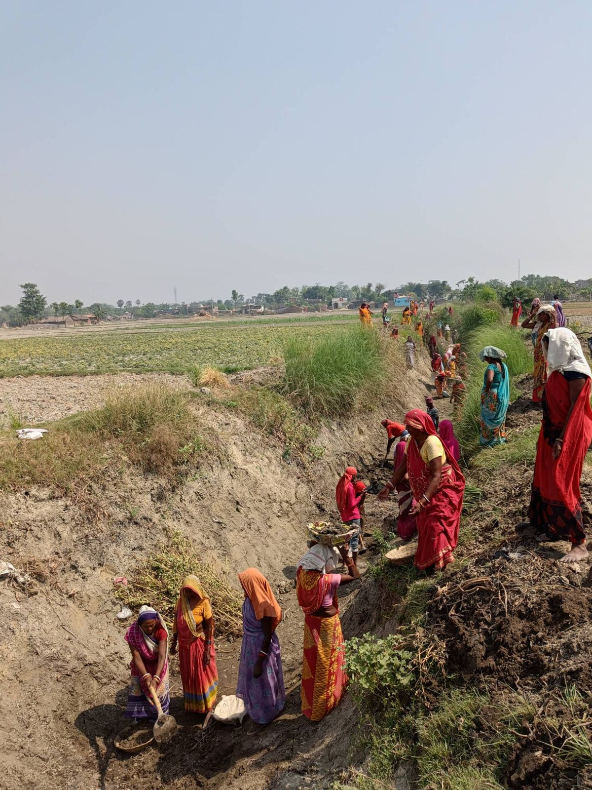
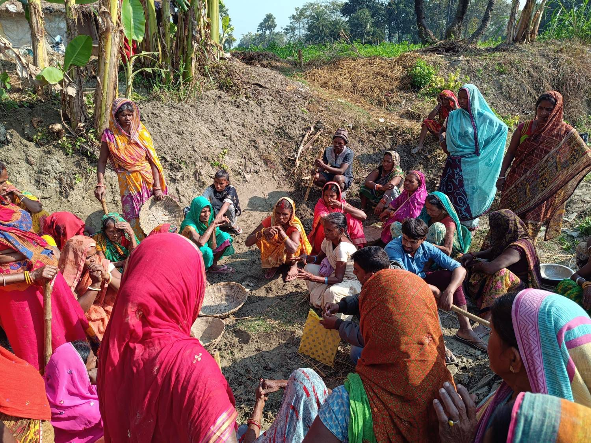
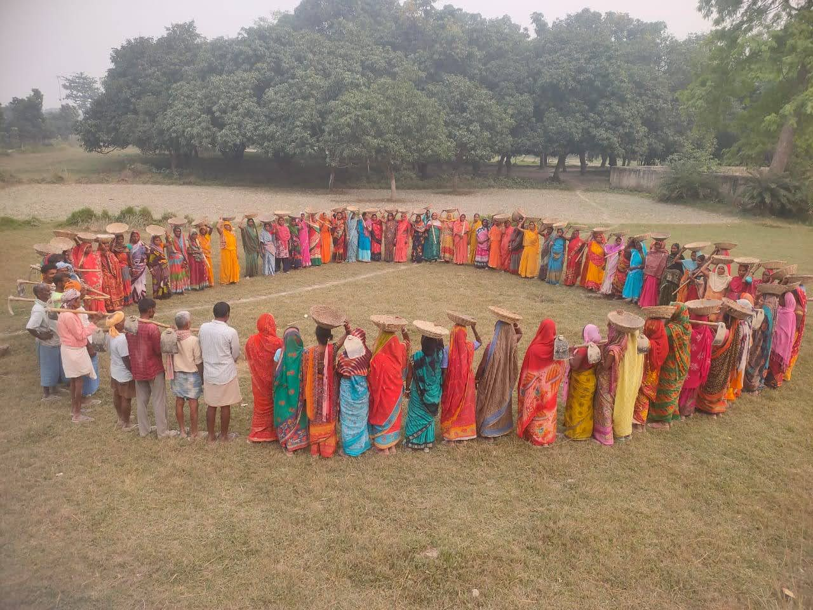

Executive Summary
The local government boundaries in Bihar are about to go through a major restructuring for the first time in over three decades. Gram Panchayat boundaries were fixed to the 1991 census, and while the state population has increased by 61 percent through five panchayat elections, the map has not moved (Section 2). The state's July 2026 notification proposes to fix this: producing 12,592 GPs and 176,285 wards in place of today's 8,041 and 109,310. This exercise reduces the population to roughly 7,000 people per GP and 500 per ward, based on the 2011 census. In this report, we focus on the effects of the delimitation, the consequences of the delay and the potential challenges that need to be addressed. We also look at some crucial welfare outcomes at both the Gram Panchayat and Ward level, and how they can potentially change based on the restructuring. Additionally, we shed some light on the implementation process and propose recommendations based on data and theory.
Bihar's Gram Panchayats are unusually large even by Indian standards, at 10,961 people per GP, more than three times the national average, and the fourth-largest of any state, behind only West Bengal, Kerala, and Assam (Section 2). Therefore, the move to increase the Gram Panchayat size is welcome and much needed to improve the local governance efficiency. This matches our own evidence directly: smaller GPs deliver more schools, health centres, water and sanitation access, NREGA workdays, and GPDP spending per capita (Section 4). However, understanding how and where the delimitation will be most beneficial is important to ensure that the implementation is carried out in a successful and targeted manner. In Section 6 we simulate new GP boundaries under the state's own rules, using two internally consistent, fully algorithmic methods for grouping villages. The two methods produce meaningfully different maps from the same underlying rule, which shows how much discretion the current process leaves to individual district officials, and how a transparent, rules-based method can remove it.
“Bihar’s Gram Panchayats are unusually large even by Indian standards, at 10,961 people per GP, more than three times the national average, and the fourth-largest of any state, behind only West Bengal, Kerala, and Assam.”
The main crux of the report (Section 4) focuses on whether the GP size predicts what residents actually experience? Across schools, health centres, water and sanitation infrastructure, NREGA workdays, and GPDP expenditure, the answer is consistently yes, which means that smaller GPs deliver more per capita. Comparing 2001 and 2011, the size penalty roughly quadrupled over the decade, meaning delimitation reduces the widening gap of access to public delivery goods. Smaller GPs are also more likely to elect better educated leaders who are better connected to local administration, although it is hard to isolate the well educated from the elite. Larger GPs tend to perform better in large scale infrastructure such as power, paved roads, mobile coverage etc.; which is not surprising given the economies of scale due to a bigger geographic scale. Nevertheless, we cannot use this fact against delimitation, since these goods can be provisioned at the block or district level regardless of GP size. Research from Uttar Pradesh's much smaller GPs suggests real gains remain available below it. Smaller GPs, on average, are therefore better and, if anything, the data suggests that the optimal size of a GP may be even lower as GP provision of public goods improves more as sizes fall below 7000.
The ward level analysis reveals a different story (Section 5). We find no effect of the delimitation on any of the cross ward-level outcomes like citizen satisfaction, ward-member knowledge and confidence, whether the government spends on goods that citizens want, and public goods provision. Ward population size and ward-member count are essentially unrelated to what gets delivered. The major reason that explains this null result is that the ward population does not vary by much, especially in comparison to GPs. Another, more substantive reason is that ward members do not have funds or administrative powers, because of which they are unable to shape ward level outcomes. However, when powers are devolved, they can clearly perform effectively. Previous work in Bihar shows that when ward members were entrusted with the responsibility of implementing the Nal Jal (piped water scheme), they delivered meaningfully more piped-water connections than those handed to a centralised department. The practical implication, developed in Section 8, is that the ward layer should be consolidated into fewer, more substantive seats with real authority, rather than multiplied by shrinking wards or adding members.
“The ward layer should be consolidated into fewer, more substantive seats with real authority, rather than multiplied by shrinking wards or adding members.”
There are two key protective measures that are required to ensure smooth implementation and ensure representativeness does not get hindered (Section 8). Firstly, dalit representation should carry an explicit floor of at least two SC ward members per GP, so that the proportional rule does not lead to fewer Dalit ward members. The literature documents that Dalit ward members have large, measurable effects on delivery, and consolidating wards will mechanically reduce their number unless a floor is set. Reservation is highly effective in this context, especially when some GPs have never been reserved. Therefore, the reservation rotation that determines which GPs are reserved for SC, ST, or OBC leadership should carry forward into the new boundaries rather than restart from zero, so all GPs get their turn on time.
The process of delimitation also requires a substantial fiscal cost that needs to be planned carefully. It is estimated to increase the combined expenditure on representatives salaries by 58 percent. However, the increase in expenses will also mean more funds available per person as funding allocation happens at the GP level and now with smaller GPs, an additional budget will allow for better provisioning of public goods for its citizens.
The biggest challenge to this whole exercise is the transition itself (Section 9). Bihar has let local democracy lapse before, with panchayat elections being delayed for 23 years, from 1978 to 2001, and evidence from interim bureaucratic administration in Karnataka shows real costs to citizens when elected leadership is replaced by appointed officials, even temporarily. Our recommendation is that delimitation proceed quickly, on a hard statutory deadline, using a transparent and fully algorithmic boundary-drawing method, with elections held on schedule. It is crucial to restructure the boundaries properly and on time to minimise any frictions that may cause any disturbance.
“The reservation rotation that determines which GPs are reserved for SC, ST, or OBC leadership should carry forward into the new boundaries rather than restart from zero, so all GPs get their turn on time.”
This report draws on five linked layers of data covering every Gram Panchayat and ward in Bihar, from Census and administrative records through to our own primary surveys and boundary simulations. The infographic below maps how these sources connect.
Key Recommendations
Condensed from Table 4.
Boundaries & GP Size
- Proceed with delimitation on the 2011 census base without further delay.
- Adopt a transparent, fully algorithmic boundary-drawing method to remove scope for informal favoritism.
- Further steps, like regularly updating boundaries as the population changes, are needed in addition to this delimitation to reduce the widening gap in welfare outcomes.
- Consider setting the GP target below 7,000, since the data show gains continuing at smaller sizes.
- Keep provisioning large-scale infrastructure (power, roads) at the block/district level regardless of GP size.
Wards
- Consolidate the ward layer into fewer, more substantive seats with real powers, and invest in peer learning for ward members.
- Preserve or restore local implementation authority to ward members for schemes suited to local execution (e.g., Nal Jal).
Representation
- Set a floor of at least two SC ward members per GP (capped around five) so consolidation does not mechanically erase Dalit representation.
- Carry forward existing reservation status into new GP boundaries instead of resetting the rotation from zero.
Cost & Timeline
- Budget explicitly for the ~58% rise in representative and staff expenditure; align with the Finance Commission’s OSR-linked Performance Grant to help offset it.
- Set a hard statutory deadline and hold elections on schedule.
Abbreviations
- BDO
- Block Development Officer
- GIS
- Geographic Information System
- GP
- Gram Panchayat
- GPDP
- Gram Panchayat Development Plan
- GRAMA
- Governance Research and Accountability for Meaningful Advancement
- LSBA
- Lohiya Swachh Bihar Abhiyan
- MIS
- Management Information System
- NREGA / NREGS
- National Rural Employment Guarantee Act / Scheme
- NRHM
- National Rural Health Mission
- OBC
- Other Backward Class
- OSR
- Own-Source Revenue
- PHED
- Public Health Engineering Department
- PRI
- Panchayati Raj Institution
- RCT
- Randomised Controlled Trial
- SC / ST
- Scheduled Caste / Scheduled Tribe
- SD
- Standard Deviation
- WIMC
- Ward Implementation and Management Committee
- WM
- Ward Member
2. The Status Quo: Running on an Outdated Map
The 1991 Rule, by the Numbers
The prevailing delimitation based on 1991 census populations was enacted by the Bihar Panchayati Raj Act, 1993, formally notified through its publication in the Bihar Gazette on August 23, 1993. This was in place by the 2001 panchayat election, the first held in Bihar in 23 years (Gupta, 2001). Elections have since run on the same map in 2006, 2011, 2016, and 2021.
At the moment, Bihar has 8,041 Gram Panchayats, with 109,310 wards. Since these figures were based on the 1991 Population Census, the working standard of around 7,000 people per GP was met in 1991, with an average of 6,883 people per GP. However, by 2001, the GP population density rose to 8,832 people, and the latest 2011 population figures suggest an average of 10,961 people in each GP. Wards are similarly over-saturated. Between 1991 and 2011, population density rose from around 500 to 806, and representation fell from 2.01 to 1.25 ward members per 1,000 people, a 38 percent dilution on a fixed map. Figure 1 presents district-wise average populations in GPs and wards respectively, across Bihar.
The New Rule, by the Numbers
On July 20, 2026, the Panchayati Raj Department announced it will redraw Gram Panchayat (GP) boundaries for the first time in 33 years. The new map uses data from the 2011 Census. By law, each GP is supposed to have about 7,000 people, and each ward should have 500. To meet these targets, the government plans to create 12,592 GPs and 176,285 wards.
This massive expansion is needed because the map was ignored for decades. If the boundaries had been updated back in 2001, the number of GPs would have only grown by 29 percent. Because the state waited to use the 2011 numbers, it now needs a 57 percent increase in GPs and a 61 percent increase in wards just to catch up to the old data.
However, even this new map is already behind reality. Because the government is relying on 2011 data, the numbers are 15 years out of date. On paper, a new GP is designed for 7,000 people. But due to actual population growth, these new GPs will hold well over 9,000 people from the very first day.
The state plans 12,592 GPs (up from 8,041) and 176,285 wards (up from 109,310), catching up to a GP that today averages 10,961 people under the 2011 Census.
Bihar has very large Gram Panchayats compared to the rest of India. Based on the 2011 Census rural data, Bihar's 8,051 GPs have an average of 11,470 people each. This is more than three times the national average of 3,418. Bihar has the fourth-highest average in the country, behind only West Bengal (18,623), Kerala (18,567), and Assam (12,229) (Table 1).
Other large states keep their panchayats much smaller. Uttar Pradesh has over four times the population of Bihar, but it divides that population across 57,694 GPs averaging just 2,692 people. Maharashtra and Madhya Pradesh have overall populations similar to Bihar, yet their GPs average only 2,193 and 2,284 people.
Across the country, the median state averages fewer than 2,900 people per GP, which is about a quarter of Bihar's size. Because Bihar still uses the 1991 map, its local governments operate at a much larger scale than the national norm.
3. The Case for Closer Government
Why Closeness Matters
The idea behind local government is straightforward: decisions should be made as close to the people as possible. Two main arguments support this. First, local leaders have better information. A representative living in the community knows exactly which hand pump is broken, which family missed their rations, and which dirt road actually gets used. An official sitting in a higher office far away does not have this daily knowledge. Second, citizens can hold local leaders directly accountable. When people can easily meet, question, and vote out the person making decisions, that leader is more likely to solve local problems quickly. Therefore, the local government must stay closely connected to the citizens. The direct link breaks down when a local body becomes too large.
India's Unfinished Devolution
India's Constitution officially created a third level of government for villages and towns through the 73rd and 74th Amendments. This allowed citizens to directly elect their local representatives. However, state governments never fully transferred the funds, daily responsibilities, and staff that these local bodies need to survive. George et al. (2024) document this gap in detail. They show that Panchayats have almost no way to raise their own revenue and must rely entirely on grants from the state and central governments. Local governments also suffer from a severe shortage of workers. Across the country, there is on average less than one Panchayat Secretary available per village, and in places like Uttar Pradesh, the ratio falls to just one secretary for every three villages.
The same study notes that recent technology upgrades have taken even more power away from local leaders. Higher-level officials increasingly use digital databases and Management Information Systems (MIS) to decide who receives welfare benefits, rather than letting the Panchayat make those choices based on their local knowledge. Ultimately, the system allows villages to hold full elections, but it denies those elected leaders the money and administrative tools they need to actually govern their communities.
Local governments in India can hold full elections, yet still lack the funds, staff, and administrative tools they need to actually govern their communities.
A Thin State at the Base
The lack of funds and power highlights a deeper problem: the Indian government has the fewest staff exactly where it interacts with citizens the most. Compared to its total population, India has a small number of public employees, and most of them work at the top levels of government (Kapur, 2020).
Figure 2 shows this contrast clearly. Countries like the United States and China assign the vast majority of their government workers to the local level, creating an upward curve in the middle of the graph. India shows the exact opposite pattern. India's public employment dips to its absolute lowest at the local level, around 10 to 15 percent, while climbing highest at the state level, which holds over 50 percent of the workforce.
Because of this structure, a local ward member or Panchayat secretary must serve thousands of people with almost no administrative support. They simply do not have the staff that a district or state office takes for granted. Local government cannot effectively solve local problems if it does not have the people required to do the actual work.
Local government holds only 10–15% of India's public employees against 50%+ at the state level, even as Bihar's ward representation thinned from 2.01 to 1.25 reps per 1,000 people between 1991 and 2011.
Bihar's Deeper Version of the Problem
In Bihar, this lack of local staff is even worse because the local governments cover massive populations. Back in 1991, the government decided a Gram Panchayat should serve about 7,000 people. Even then, 7,000 people was a very large number for a small local office to manage.
Over the next thirty years, the government never updated the map. While Bihar's overall population grew by 61 percent between 1991 and 2011, the Panchayat boundaries stayed exactly the same. As a result, the average number of people in a Gram Panchayat rose from 6,883 in 1991 to 10,961 by 2011.
Individual wards became incredibly crowded as well. The number of people in an average ward increased from about 500 to 806. Because the map never changed, the number of local representatives for every 1,000 people dropped from 2.01 down to 1.25. Over three decades, local leaders have been forced to take care of far more people with the exact same resources.

4. GP Size: Why It Matters
This section asks a simple question: does GP size actually change what residents experience? If smaller GPs consistently provide more, more schools, more health infrastructure, better-connected officials, and more educated leaders, that strongly supports the government's plan to redraw the boundaries. If larger GPs perform better, or if size makes no difference, the government should proceed with caution.
We answer this using three data sources: administrative scheme records (NREGA MIS, GPDP expenditure, Nal Jal/Nali Gali, Mission Antyodaya), the Census Village Directories (1991, 2001, 2011), and our own surveys of citizens, ward members, and Mukhiyas (the elected heads of GPs). Appendix A summarizes all the data used in this section. To measure this, we show how much each outcome changes for every additional 1,000 people in a GP. We also mark both the proposed 7,000-person target and the current average GP size on the charts.1
We organize this evidence into five parts. We show that smaller GPs deliver more of almost everything per person in 2011. We show the one exception: large-scale trunk infrastructure, where bigger GPs perform better because they can pool resources. We look at what citizens actually want from public schemes, showing that GP size does not change how well spending matches those preferences. We ask whether smaller GPs elect different types of representatives. We show that this penalty for living in a large GP grew significantly worse between 2001 and 2011 due to the prolonged delay in delimitation. Finally, we ask whether the proposed 7,000 target is actually small enough.
Smaller GPs Deliver More
When a GP grows in population, the provision of local public goods consistently drops. We see this across nearly every outcome we examined, including infrastructure like public schools, health centres, and piped-water availability. We also see it in public works programs, specifically the schemes for drain and lane construction (Nali Gali) and tap water provision (Nal Jal). To measure citizen welfare, we track the number of work days provided under NREGA and a general welfare index we built from surveying nearly 10,000 citizens across 10 districts in Bihar.2
The numbers below show how much the per-capita availability drops for every additional 1,000 people in a GP.
Primary schools per 1,000 people fall by 3.1% of the mean, middle schools by 3.9%, and secondary schools by 2.8%; primary schools are shown in Figure 3a. Health centres per 1,000 people fall by 3.4% (Figure 3b). Nal Jal and Nali Gali projects per 1,000 people fall by 4.9% each (Figure 3c), and households with piped water per 1,000 people fall by 2.9% (Figure 3d). NREGA persondays per person over 2021–24 fall by 4.8% for every extra 1,000 people in the GP (Figure 3e). Our general welfare index confirms this, falling by 0.014 for every additional 1,000 people.
Taken together, these results prove that smaller GPs perform better at providing public goods and welfare. The way a GP is funded explains why this happens. Gram Panchayat Development Plan (GPDP) spending per person drops by 48.8 INR for every additional 1,000 people in the GP (Figure 3f). To put this in context: when a GP’s population increases by 1 percent, its total GPDP budget only increases by 0.43 percent. Because budgets are handed out mostly per GP rather than per person, smaller GPs receive more funding per resident. This is also why creating more GPs will cost the state more money in total, which we explain further in Section 7.
The GPDP figures above are planned allocations, the amounts budgeted under the Gram Panchayat Development Plan, not money that has actually reached residents. To check whether the pattern holds for real spending, we also look at actual GPDP expenditure. We use eGramSwaraj records of every XV Finance Commission work in the 2024–25 GPDP across all 38 districts, and divide each GP’s actual expenditure by its 2011 population. The average GP spent 226 INR per person, and this falls by 8.6 INR, or about 4 percent of the average, for every additional 1,000 people in the GP (Figure 4). GPs of 5,000–7,500 people spent 279 INR per person, compared with 183 INR in GPs of 15,000–20,000 people. As with planned budgets, total spending does not keep pace with population: a GP with 1 percent more people spends only about 0.59 percent more in total.
This gap comes from how much money each GP has per resident, not from how quickly it spends. Smaller GPs do not spend a larger share of what they plan: GPs of every size had spent roughly 26–27 percent of the estimated cost of their planned works, and this share does not change with GP size. As with the other results in this section, these are comparisons across existing GPs. They show that residents of smaller GPs currently receive more GPDP spending per person.
Actual GPDP expenditure confirms the planning-stage pattern: the average GP spends 226 INR per person, falling by about 4 percent for every additional 1,000 people, even though the share of the budget actually spent (roughly 26–27 percent) does not vary with GP size.
The Exception: Trunk Infrastructure
We now turn our attention to trunk infrastructure: the main network of shared core facilities such as major roads and power grids that service an entire region, instead of a single property. Domestic power hours, the share of villages with a major district road, and mobile coverage all rise with GP size, by 1.1%, 2.4%, and 1.3% of the mean respectively for every additional 1,000 people in GP population (Figure 5). Unlike schools, health centres, or toilets, goods that are essentially replicated village by village and so scale linearly with population, these outcomes belong to large, lumpy trunk infrastructure.
Power lines, grid capacity, paved district roads, and mobile towers all require a substantial fixed investment that is easier to justify, and to amortize, over a larger population base. Larger GPs are consequently better placed to support this kind of infrastructure, forming economies of scale, that is, GPs benefit from cost advantages as the scale of the operation increases. Naturally, we would expect this to run in the opposite direction from the small-GP advantage documented previously.
That said, this interpretation warrants caution. Larger GPs may be concentrated in more densely populated areas where trunk infrastructure is inherently more viable. The observed relationship may therefore reflect population density rather than GP size itself, making it difficult to isolate whether these apparent economies of scale arise from larger administrative units or from the density of the populations they serve.
For every 1,000 additional people in a GP, domestic power hours rise by 1.1%, the share of villages with a major district road rises by 2.4%, and mobile coverage rises by 1.3% of the mean: trunk infrastructure that favors bigger GPs.
Smaller GPs generally build more public goods, but we wanted to know if their spending actually matches what citizens want. We tested whether smaller GPs listen to citizen demands better than larger ones. To figure this out, we created a way to measure alignment. For every GP, we compared how much they spent on a specific scheme through the Gram Panchayat Development Plan (GPDP) against the percentage of citizens who actually asked for that scheme. A higher match means the GP is spending its money on exactly what its people requested.
We need to point out two important limitations to this data. First, our survey only covers 10 districts, so it might not perfectly represent the entire state of Bihar. Second, our analysis only measures what citizens want from their local government, not what they want from the government as a whole. For example, people naturally expect local leaders like Mukhiyas and ward members to handle local issues like piped water and drainage. At the same time, they expect the state government to pay for larger projects like schools and primary health centers. These answers simply reflect how duties and resources are divided between different levels of government in Bihar and across the rest of India. Figure 6a uses all 19 GPDP scheme heads3; Figure 6b restricts the analysis to the five core, high-salience schemes: Nali Gali (drains/lanes), Nal Jal (piped water), Solar Panels, Toilet Provision, and the Lohia Swachh Bihar Abhiyan (LSBA) (sanitation). These are the schemes with meaningful preference and cost coverage in a substantial share of GPs. In both cases, the curve is flat across the population range, with no visible trend. Unlike the per-capita provision outcomes elsewhere in this section, GP size does not predict how well a GP’s spending tracks its citizens’ stated preferences.
GP size predicts how much of what citizens receive, but not how well GP spending matches what citizens actually asked for: that alignment is flat regardless of population.
Who Gets Elected
Smaller GPs elect more competent leaders. We measure this competence directly by looking at their years of formal schooling, which we calculate based on each leader’s official educational qualification category. For every extra 1,000 people added to a GP, the Mukhiya’s education falls by 3.3% (Figure 7a). Ward members show the exact same pattern. Based on a massive sample of 60,381 wards, a ward member’s education drops by 5.7% for every extra 100 people in their ward (Figure 7b).
However, this increase in education comes at a cost to everyday representation. We measure this using a “representativeness gap.” This gap compares the standardized education level of a Mukhiya’s father against the average education of a regular citizen’s father in that same GP. A positive gap means the leader comes from a more elite, highly educated family background than the voters they represent. This gap falls by 0.054 for every extra 1,000 people in the GP, which means smaller GPs are the ones that tend to elect these more elite Mukhiyas (Figure 8a). Although this specific estimate relies on a smaller 19 percent sample of our data, this trade-off between representativeness and competence is well-documented in local governance (Bamezai et al. (2026b)).
Research shows that electing elite leaders can often harm public welfare. For example, Besley et al. (2012) document that leaders from less wealthy, non-elite households have policy preferences that align much better with the needs of average citizens. When elites capture local governments, they often steer public resources toward their own political networks rather than targeting the poorest households.
Finally, smaller local governments produce leaders who are better connected to the local administration. The share of ward members who report knowing the Block Development Officer (BDO) drops by 1.8% for every extra 1,000 people in the GP (Figure 8b).
This risk highlights why political reservations here are essential. By mandating leadership quotas for marginalised groups, the state creates a safeguard against elite capture. Reservations force representativeness back into the system, ensuring that citizens can enjoy the structural benefits of a smaller GP without losing their voice to traditional elites.
For every 1,000 additional people in a GP, Mukhiya schooling falls by 3.3%, the representativeness gap narrows by 0.054, and the share of ward members who know their BDO drops by 1.8%.
A Widening Penalty, 2001–2011
By comparing data from the 2001 and 2011 Census Village Directories, we see that delaying boundary changes created a penalty that worsened over time. To track this, we look at education and health infrastructure, domestic power, and paved roads. We also combine all these indicators into a single public goods index to calculate an overall score.
Back in 2001, the disadvantage of living in a large GP was relatively small. For every extra 1,000 people, the overall public goods index dropped by only 0.0045 (Figure 10a). This drop was driven almost entirely by a lack of primary schools, while the number of health centres per person remained the same regardless of GP size (Figure 10c). At that time, connectivity goods actually favoured larger GPs.
Fast forward to 2011, and this penalty quadrupled to a drop of 0.019 (Figure 10b). The gap in health infrastructure appeared entirely during this ten-year window. While every GP received more health centres during the National Rural Health Mission (NRHM) build-out, small GPs gained roughly twice as much per person compared to large ones (Figure 10c–Figure 10d).
We can confirm this widening gap by looking directly at the rate of change rather than just the final numbers. Between 2001 and 2011, as GP population increases, the growth in health centres per 1,000 people, primary schools per 1,000 people, and the overall index all significantly slow down (Figure 9a, Figure 9b, Figure 9c). Large GPs did not just start in a worse position in 2001; they also fell further behind over the next ten years.
Part of this gap exists simply because the populations of large GPs grew much faster during this period (Figure 9d). However, the main reason they fell behind is that they built new facilities at a much slower pace. Freezing the boundaries to the 1991 map did not just lock in the disadvantages for larger GPs. It actively made things worse every single year. Proceeding with the new delimitation will finally stop this compounding penalty.
The public-goods-index penalty for every extra 1,000 people in a GP grew from 0.0045 in 2001 to 0.019 in 2011, roughly a fourfold increase over the decade.
Is 7,000 Small Enough?
Across all our data for GPs with populations between 5,000 and 20,000, the trend forms a straight line. Smaller GPs simply perform better. Pushing the average GP size down from roughly 12,000 to 7,000 is a massive improvement, but it raises an important question: what is the actual ideal size? Narasimhan and Weaver (2024) explored this exact question for Gram Panchayats in Uttar Pradesh and also found that smaller populations lead to much better access to public goods.
In Uttar Pradesh, the average GP has only 2,692 people across a total of 57,694 GPs. This is far smaller than both Bihar’s current and proposed sizes. They found that moving villages into even smaller GPs by reducing their population by 368 to 649 people created meaningful gains across the board. Middle-school access improved significantly, with the advantage for smaller GPs widening from 1.9 percentage points in 2001 to 4.9 percentage points by 2011. Toilet ownership grew by 3.3 percentage points, which is roughly a 17 percent increase over the baseline, while open defecation dropped by 3.4 percentage points. The overall delivery of welfare programs improved by 0.09 standard deviations, and NREGS delivery increased by 0.15 standard deviations.
In their study, this relationship is not just a straight line. The data shows that the absolute best size for a GP is between 1,000 and 2,500 people. At this size, the village is small enough to elect its own local leader (Pradhan), which is exactly where these benefits come from.
Bihar’s proposed target of 7,000 is still nearly three times larger than Uttar Pradesh’s average of 2,692. It is also well above the 1,000 to 2,500 range that Narasimhan and Weaver identified for the strongest results. Our own charts (Figure 3, Figure 7) confirm that we could unlock even more improvements by shrinking GPs further. Therefore, the 7,000 target should be viewed as a starting point rather than a final ceiling. Neither the data from Uttar Pradesh nor our own findings suggest that the benefits of shrinking a GP stop at 7,000 people.
The 7,000-person target should be read as a floor to build from, not a ceiling: Uttar Pradesh’s much smaller GPs (2,692 average) still show gains at 1,000–2,500 people.
1 To do this accurately, we compare GPs within the same block while controlling for distance to the nearest town and the GP’s SC population share. We only look at GPs with populations between 5,000 and 20,000 to prevent extreme outliers from skewing the results, and we cluster the standard errors by block. The accompanying figures show this relationship with a 95 percent confidence band. ↩
2 We built the welfare availment index by averaging five standardized indicators: whether a citizen received a job card, ration card, pension, toilet scheme, or Awas (housing) benefit. We measure these outcomes using z-scores. ↩
3 The 19 schemes are: (1) Nal Jal; (2) Nali Gali; (3) MGNREGA; (4) Pension (Old-age Pension, Chief Minister Pension); (5) Shauchalay (Toilet); (6) Ration Card; (7) Pradhan Mantri Awas; (8) Solar Light; (9) Lohiya Swachh Bihar Abhiyan – Solid and Liquid Waste Management (LSBA-SLWM); (10) Jal Jeevan Hariyali Abhiyan; (11) Scholarships; (12) RTPS Certificates (Income, Caste, Birth/Death, Residence); (13) Education/School; (14) Kanya Vivah Yojana Bihar; (15) Bihar Lok Shikayat; (16) Ayushman Card; (17) Vishwakarma Yojana / Udyami Yojana / Kaushal Vikas Yojana; (18) any other agriculture-related scheme; and (19) Healthcare. ↩

5. Ward Size: Why It Doesn’t
We analysed various outcomes at the ward level as well. Across the ten-district survey data, ward population size is null on essentially everything we measure: Ward Member (WM)/citizen priority overlap, WM confidence, WM knowledge, citizen satisfaction, public goods provision, and welfare indices are all flat against ward size (Figure 11). The one exception is WM education, where smaller wards have more educated ward members, the same pattern we find at the Mukhiya level (Figure 7b). If ward size mattered for what a ward member is actually meant to do, it should show up somewhere on this list but it does not.
Two explanations fit this, and they are not mutually exclusive. First, ward members hold no formal powers. They do not determine the budgets, sanction any projects or development activities, or have any administrative authority separate from the Mukhiya. If a position carries no real powers, there is little reason for the population it represents to matter, since there is nothing for that population to act on. Second, the observed range of ward sizes in Bihar (roughly 500 to 1,200 people) may simply be too narrow for size to make a difference even if ward members did have real authority. A ward member serving 500 people is not meaningfully easier to hold accountable than one serving 1,200. This second point bears directly on delimitation, since the proposal under consideration moves the average ward from around 750 people to around 500. Even if we granted ward members full powers and set the first explanation aside, a shift of this size sits well within a range where the data already show no effect.
Generally, the total number of ward members matters as little as their size. Looking at GPs that gained an additional ward member, irrespective of who that member is, GP-level workdays rise by only around 238, which is a statistically insignificant effect (George et al. (2025)). It cannot be ascertained that this increase is meaningfully different from zero. Adding a body to the ward layer does not translate into more work getting done, consistent with the same structural point: a ward member with no formal powers does not become more effective just because there are more of them. However, there is a clear exception to this rule: gaining three or more additional Scheduled Caste (SC) ward members actually increases public welfare outcomes.4
Instead of multiplying the ward layer by shrinking ward size or adding ward members, decentralising it into fewer wards with greater powers might be more beneficial. The Har Ghar Nal ka Jal project under the Chief Minister’s Saat Nischay Yojana presents an ideal setting to test this. In 2016, project implementation was decentralized to ward members through the Ward Implementation and Management Committees (WIMC). However, from May 2023, responsibility for all wards was handed over to the Public Health Engineering Department (PHED). This policy shift was based on the claim that the experience of the previous years showed that ward members lacked expertise in running and maintaining Nal Jal projects.
Our analysis of village-level data on piped water availability (GRAMA (2024)) tells a different story. It shows that neighbouring wards in villages with PHED implementation actually have 7.9% to 21.8% fewer water connections compared to wards where implementation was handled directly by the ward members (Figure 12). This local improvement primarily takes place through the channels of ward members from SC/ST communities, because their wards are given priority in allocating Nal Jal projects, and they face greater local accountability to the citizens.
Gaining three or more additional SC ward members does increase public welfare outcomes: representation matters even where raw ward size doesn’t. Powers, not headcount, are what make the ward layer work.
4 This contrasts with what happens outside of Bihar. Weaver and Narasimhan (2026) find a different pattern across India, where simply having more ward members, including more Dalit ward members, does not seem to change how well local governments perform. They note that adding 1.4 ward members, or 0.4 SC ward members (which increases the share of SC ward members by 4.4 percentage points), has little effect on any of the outcomes they study, including NREGA workdays and access to welfare programmes. Other measures of local government performance also show little change: projects remain about as well aligned with what citizens want, benefits remain similarly distributed across villages, and there is no clear change in financial or social audit violations. We do not observe this flat pattern in Bihar. ↩
6. Simulating the New Map
The Panchayati Raj Department has set forth the rule that new Gram Panchayats (GPs) should have about 7,000 people. To visualise how the new map will look like, we simulate the new boundaries under the new rule by grouping existing revenue villages within each block until they reach this target. Appendix B explains the exact steps we followed.
It is useful to simulate the new boundaries because under the current rules, local district officials decide exactly which villages get grouped together, and the District Magistrate makes the final decision on the boundaries. Because this process relies on human judgment, two officials can follow the exact same rules and still draw completely different maps.
We tested two different ways to group the villages to see how much this human discretion matters. The exercise reveals two main things. First, the grouping method directly changes the total number of GPs created. We already see this problem on the current map, where average GP sizes vary a lot across districts even though they all rely on the same 1991 baseline. Second, a computer algorithm guarantees the exact same map every single time. A scientific, rules-based system removes the chance for officials to manipulate boundaries to favour specific politicians or villages.
Our algorithm builds GPs by adding one village at a time until the population reaches 7,000. We tested a “strict” rule and a “closest” rule. Under the strict rule, the program always adds the final village that pushes the total over the line, meaning every GP has at least 7,000 people. Under the closest rule, the program checks whether the total is mathematically closer to 7,000 with or without that final village. This means a GP can end up slightly above or slightly below 7,000 people.
Figure 13 shows how these two methods compare to the current map in the Kadwa block of Katihar. The closest method creates the highest number of GPs with the lowest average population (Figure 14). However, this method creates far more GPs than the government's target of 12,592. The strict method gets much closer to the government's target count, but it results in GPs that hold more than 7,000 people on average (Table 2).
| Metric | Current | Strict | Closest |
|---|---|---|---|
| Count of GPs | 7,917 | 11,075 | 13,507 |
| Average population per GP | 11,664 | 8,338 | 6,837 |
| Average GPs per block | 14.83 | 20.74 | 25.29 |
| Average GPs per district | 208.34 | 291.45 | 355.45 |
Table 2: Summary statistics of GP splits. The two algorithms differ in the number and average population of GPs.
This difference in population matters beyond the raw count. Section 4 and Section 5 show that smaller GPs consistently perform better and that ward size makes little difference. Because the closest method produces more GPs with a lower average population than the strict method, it should also perform better on those same measures.
Neither algorithm lands exactly on the government's target of 12,592 GPs: the choice of method is itself a policy decision, not a neutral technical detail.
The closest method delivers 25.29 GPs per block on average, versus 14.83 today, a 71% increase in density that shows up as a visibly deeper red across nearly every district on the map.
7. What Delimitation Costs
Redrawing boundaries carries a direct financial cost. Currently, the state spends 1,526 crore INR every year to pay the salaries of officers, employees, and elected representatives across all of Bihar’s Gram Panchayats. Creating 4,551 new GPs and 66,975 new wards would require an extra 330 crore INR for representatives and 549 crore INR for officers. This creates a combined increase of 879 crore INR, representing a 58 percent jump in total spending. This estimate does not even include the massive extra cost of constructing new buildings and hiring brand new staff for these additional GPs.
This financial cost highlights a deeper structural reality about how the government distributes money. Currently, Gram Panchayat Development Plan (GPDP) budgets do not grow perfectly in line with population size. When a population grows by 1 percent, the budget only grows by 0.43 percent. Because money is handed out largely on a per-GP basis rather than a strictly per-person basis, creating more GPs will cause the average GPDP fund per GP to drop. This explains why delimitation is so expensive overall. More GPs will claim a larger total share of the state budget. However, this is also exactly why the reform helps underserved citizens, because each new, smaller GP will receive a baseline amount of funding regardless of its smaller population size.
Bihar spends ₹1,526 crore a year on salaries today; the proposed map adds ₹879 crore more, a 58% jump, since GPDP budgets grow only 0.43% for every 1% rise in GP population.
Section 4 and Section 5 clearly established how population size affects government performance. Smaller GPs perform better in almost every category, but ward size has absolutely no impact on performance. The government’s current delimitation plan takes advantage of the GP finding but completely ignores the ward finding. A much more efficient solution for both finances and public performance would be to keep the current number of wards and ward members, but grant those existing members greater administrative powers.
We can easily break down this financial burden. The estimated cost of 879 crore INR combines two separate administrative choices: creating more GPs and creating more wards. These two changes do not have to happen at the same time. By looking at what exactly drives each expense, we can see how much of this cost is strictly necessary to shrink GPs, and how much is just optional spending on smaller wards that will not improve performance.
The majority of this new expenditure is fixed at the GP level rather than the ward level. The largest single cost is the 549 crore INR increase for officers and staff. This expense is driven entirely by the number of new GPs, because the state assigns these posts per GP regardless of how many wards sit inside it. The remaining 330 crore INR increase pays for elected representatives. Out of this amount, only 137 crore INR scales with the GP count to pay the honoraria for the Mukhiya, Up-Mukhiya, Sarpanch, Up-Sarpanch, Panchayat Samiti members, and Zila Parishad members. The final 193 crore INR is dedicated strictly to paying the 66,975 new Ward Members and Panchs created by carving smaller wards. If Bihar redrew the GP boundaries but left the ward boundaries completely untouched, the state would save 193 crore INR every single year. The government would completely avoid the cost of the 66,975 new ward-level seats while still capturing 100 percent of the performance gains that come from smaller GPs. Ultimately, this targeted approach would cut the total financial cost of delimitation by nearly a quarter, saving 21.9 percent of the projected budget.
Redrawing GP boundaries but leaving wards untouched would save ₹193 crore a year: cutting the total cost of delimitation by nearly a quarter (21.9%) while keeping 100% of the GP-size performance gains.
Some initial steps have also been set in place for the financial empowerment of GPs. The XVI Finance Commission has recommended a total grant of INR 51,923 crore for Bihar’s three-tier Panchayati Raj Institutions over 2026–27 to 2030–31. While 80% of this amount will be provided as a Basic Grant, the remaining 20% forms a Performance Grant, whereby GPs are being empowered to raise and spend their own income under the budgetary head of Own-Source Revenue (OSR). To qualify for this grant, a GP must grow its OSR by at least 2.5% a year (or 1.025× the prior year’s, whichever is lower) while collecting a minimum of INR 1,200 per household annually. This shift places real financial responsibility on GPs: they are being pushed to take ownership of their own finances, since their share of Commission funding now depends on what they raise themselves, not just what they are given.
The Performance Grant's OSR link is a real opportunity to help offset delimitation's fiscal cost, but only if smaller, better-funded GPs can actually raise more locally.

8. How to Delimit Well
Cut GP size. The state’s proposed population target of 7,000 could be set lower. Section 4 shows that smaller GPs provide more schools, health centres, and NREGA persondays per person, and also elect more educated leaders. Importantly, these gains do not level off as GPs approach 7,000 people. This suggests that making GPs smaller could bring further improvements beyond what the current proposal would achieve.
Decentralise to fewer wards with more powerful ward members. As per our analysis in Section 5, outcomes do not significantly differ with ward size, and hence, having more ward members does not necessarily mean having better local government. Fourteen ward members in each GP can spread responsibility across many seats without giving individual members enough authority to get things done. Instead, the ward layer provides an opportunity for decentralisation, a smaller number of ward members, with more meaningful responsibilities and powers, could turn representation into more effective local government. Consolidating the existing wards also decreases the estimated cost of delimitation by 22 percent.
The population target could go below 7,000 without losing gains; today's 14 ward members per GP spread responsibility too thin, and consolidating the ward layer would cut costs by 22%.
One way to strengthen the ward members who remain is through peer learning. In our Randomised Controlled Trial (RCT) across 2,213 Bihar GPs, ward members who were randomly placed in peer groups improved their governance knowledge by 0.12 SD. This also helped other ward members in the same GP who were not part of the groups: their knowledge increased by a further 0.08 SD. Despite the intervention not involving any change in financial powers, peer learning also led ward members to direct 5% more GPDP spending towards what citizens said they needed. The programme was relatively inexpensive, generating $18.47 in planned public goods spending for every dollar invested (Bamezai et al. (2026)).
Protect Dalit representation. The number of Dalit ward members matters for what local governments provide. Adding one Dalit ward member leads to 2,024 more NREGA person-days per year, a 15% increase (George et al. (2025)). The effect becomes even larger when a GP has at least three Dalit councillors, with NREGA workdays increasing by 34%. This is particularly important because reducing the number of wards would also reduce the number of Dalit ward members in many GPs. One way to avoid losing this representation would be to guarantee at least two SC ward members in every GP, even when the proportional rule would otherwise give only one, with the number capped at around five.
Guaranteeing at least two SC ward members per GP (capped around five) prevents consolidation from mechanically erasing Dalit representation.
Do not reset the reservation lottery. When GPs are reorganised, existing reservation status should be carried forward rather than starting the reservation rotation again from scratch. Restarting the rotation could leave some GPs repeatedly reserved while others never get a reserved seat. Panel A of Table 3 shows how GPs have been reserved over time. The 2001 benchmark gives an idea of what happens when SC representation is left entirely to the electoral process: SC candidates won only 1.6% of Mukhiya seats despite SCs making up 15.5% of the population (Gupta, 2001).5
Reservation can also have effects that last after it ends. GPs that were previously reserved are 11.3 percentage points more likely to elect an SC head even after the reservation is withdrawn (Kumar and Sharan, 2026). This effect is especially strong in GPs where SCs make up a middle-sized share of the population (the middle tercile, averaging around 16%). In these GPs, SCs are initially too few to win office without reservation, but after getting the opportunity to hold office once, they are more likely to continue winning even after the reservation ends. Panel B of Table 3 focuses specifically on these GPs. Compared with all GPs, this group contains a larger share of GPs that have never been reserved, even though these are the GPs where greater SC representation appears to have the largest effects.
5 For the Any row, Reserved Both indicates the GP was reserved under some category (SC, ST, or OBC) in both the 2006 and 2016 cycles, not necessarily the same category each time. Of the GPs reserved in both cycles under this definition, 99.4% switched categories between 2006 and 2016 (most commonly rotating between SC and OBC), reflecting the reservation policy’s built-in category rotation across delimitation cycles. ↩
9. Getting the Transition Right
Once the new GP boundaries are decided, there will be a transition period in which appointed bureaucrats take over until the next Panchayat elections. In Bihar, this would mean a period between the end of the current elected leaders’ terms in November 2026 and the next elections. Evidence from Karnataka suggests that this change matters for how GPs perform. Arora et al. (2026) find that, compared with bureaucrat-run GPs, politician-run GPs spend 59 percent more on public goods that citizens want, and generate 0.11 SD more NREGS person-days. The authors link these differences mainly to the greater accountability and citizen engagement that elected leaders bring.
The bigger risk is that a temporary delay can become a much longer one. Bihar has seen this before: panchayat elections were not held for 23 years, from 1978 to 2001, and resumed only after judicial intervention (Gupta, 2001). Other states have had similar problems with long delays in urban local body elections.
A statutorily hard-deadlined, GIS-assisted delimitation, carried out quickly, with elections held on schedule. Delimitation should be faster and better, not paused.
Table 4: Summary of Recommendations
Every finding in this report, and the recommendation it supports, in one place.
Appendix A. Data Inventory
| Source | Sample | Vintage |
|---|---|---|
| A. Census | ||
| Population Census, 1991 | 6,887 GPs | 1991 |
| Population Census, 2001 | 8,392 GPs | 2001 |
| Population Census, 2011 | 8,392 GPs | 2011 |
| Village Census, 2011 | 39,359 villages | 2011 |
| Socio-Economic Caste Census, 2011–12 | 97 million citizens | 2011–12 |
| B. State Election Commission | ||
| Ward and Mukhiya Candidates, 2016 | ∼450,000 candidates | 2016 |
| Mukhiya Winners, 2016 | 7,148 Mukhiyas | 2016 |
| GP Reservation Status, 2006 / 2011 / 2016 | 8,392 GPs | 2006–16 |
| Ward-level Data, 2016 | 100,456 wards | 2016 |
| C. Administrative | ||
| NREGA MIS, 2021–24 | 7,658 GPs | 2021–24 |
| PRD Nischaysoft Data | 100,000+ wards | 2016–19 |
| D. Surveys for RCTs | ||
| Citizen Survey (10 districts) | 9,699 citizens | Nov 2024–Feb 2025 |
| Ward Member Survey (10 districts) | 6,213 WMs | Aug–Oct 2024 |
Table 5: Local Governance in Bihar, Data Inventory
Appendix B. Simulation Methodology
Objective: We take Bihar’s existing blocks and, within each one, carve its villages into brand-new groups of roughly 7,000 people each. Each group becomes one new GP. The sorting algorithm follows the rules outlined by the Panchayati Raj Department.
- The simulation begins in the revenue village in the north-west corner of each block.
- From this revenue village, we trace all villages in a clockwise direction, spiraling inward. Once all villages in the outer perimeter are traced, we begin with the next ring in, and so on, until every village has been visited.
- As each revenue village is visited, a running headcount is kept of the cumulative village population as per the 2011 Census.
- A village is only allowed to join a group if it is adjacent to a village already in that group.6
- We follow two versions of grouping revenue villages: (a) strict, only once the running total passes 7,000 people does the set of villages form a new GP; (b) closest, checks the running total before and after adding the village that spills over 7,000 and finalizes whichever set is closest to the threshold.
- Once a group of villages forms a GP, reset the counter to zero and keep going with the next village.
- Repeat until all villages in the block are assigned to a GP.
6 Omitting the adjacency condition can group villages that lie clockwise to each other, but are actually across the block. This would construct GPs whose shape on the map looks like scattered patches of land instead of one solid area. ↩
About the interactive charts in this edition
Curve charts show local-linear fits (Epanechnikov kernel) of each outcome on GP or ward population, with a 95% confidence band, following the specification described in footnote 1. Crosses mark the fitted value at the proposed size and at the current mean size. Open “Learn more about this data” under any chart for its definition, source, estimate and sample. Charts can be downloaded as images. Charts based on public data can also be viewed as a table; charts based on GRAMA's own surveys and analysis are shown as charts only.
References
Arora, A., George, S., Mantha, N., Rao, V., and Sharan, M. (2026). Do elected leaders add value? Evidence from a natural experiment in India. Submitted to American Economic Review.
Bamezai, A., George, S., Hari, S., Sharan, M., and Sharma, M. (2026). Learning to govern: The impact of politicians' peer networks. Working Paper.
Besley, T., Pande, R., and Rao, V. (2012). Just rewards? Local politics and public resource allocation in south India. The World Bank Economic Review, 26(2):191–216.
George, S., Gupta, N., and Sharan, M. (2025). Who, not how many: Local council design and workfare delivery in rural India. Working Paper.
George, S., Rao, V., and Sharan, M. R. (2024). Two hundred and fifty-thousand democracies: A review of village government in India. Policy Research Working Paper 10793, World Bank Group, Washington, DC.
GRAMA (2024). PHED vs ward members: How implementing agency affects households' access to piped water in Bihar. Technical report, GRAMA.
Gupta, S. (2001). New panchayats and subaltern resurgence. Economic and Political Weekly, 36(29):2742–2744.
Kapur, D. (2020). Why does the Indian state both fail and succeed? Journal of Economic Perspectives, 34(1):31–54.
Kumar, C. and Sharan, M. (2026). The short- and long-run distributional consequences of political reservation. Revise & Resubmit, Journal of the European Economic Association.
Narasimhan, V. and Weaver, J. (2024). Polity size and local government performance: Evidence from India. American Economic Review, 114(11):3385–3426.
Weaver, J. and Narasimhan, V. (2026). The limits of political representation: Evidence from India. Conditionally accepted at American Economic Review: Insights.
Suggested Citation
GRAMA (2026). “Redrawing the Map: A Policy Note on Panchayat Delimitation in Bihar.” Working draft, not for circulation. Patna, Bihar.